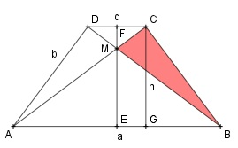

Aufgabe 118 Wie groß ist die farbige Fläche A des gleichschenkligen Trapezes, wenn AB = 200 mm, AD = 120 mm und CD = 56 mm?

Satz von Pythagoras im Dreieck GBC: BC2 = h2 + BG2 BG = AB/2 - DC/2 = 100 mm - 28 mm = 72 mm 1202 = h2 + 722 |-722 h2 = 9 216 mm2 |√ h = 96 mm Strahlensatz: FC MF ---- = ---- AE ME 28 MF ----- = ---- 100 ME Über Kreuz multipliziert: 28 * ME = 100 * MF |:100 MF = 0,28 * ME (1) ME + MF = h |-ME MF = 96 - ME (2) (2) eingesetzt in (1) 96 - ME = 0,28 * ME |+ME 1,28 * ME = 96 |:1,28 ME = 75 mm MF = 21 mm A = ATrapez/2 - AEBM - AMCF 200 + 56 ATrapez/ = ---------- * 96 mm2 = 12 288 mm 2 ATrapez/2 = 12 288 mm2/2 = 6 144 mm2 100 * 75 AEBM = ---------- mm2 = 3 750 mm2 2 28 * 21 AMCF = --------- mm2 = 294 mm2 2 A = 6 144 mm2 - 3 750 mm2 - 294 mm2 = 2 100 mm2